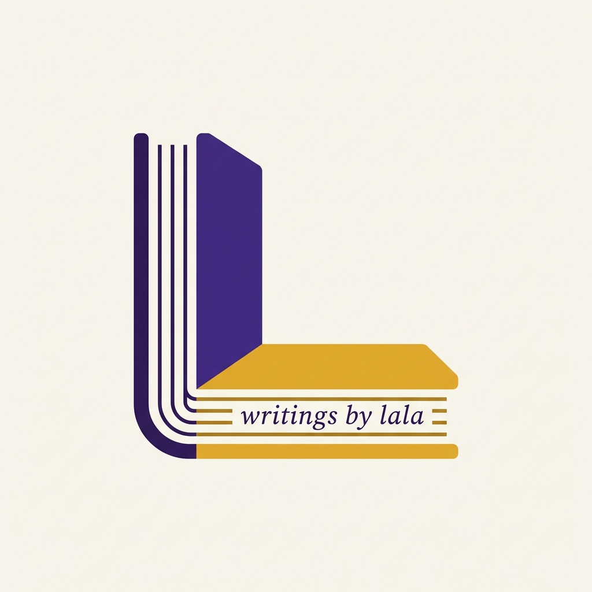
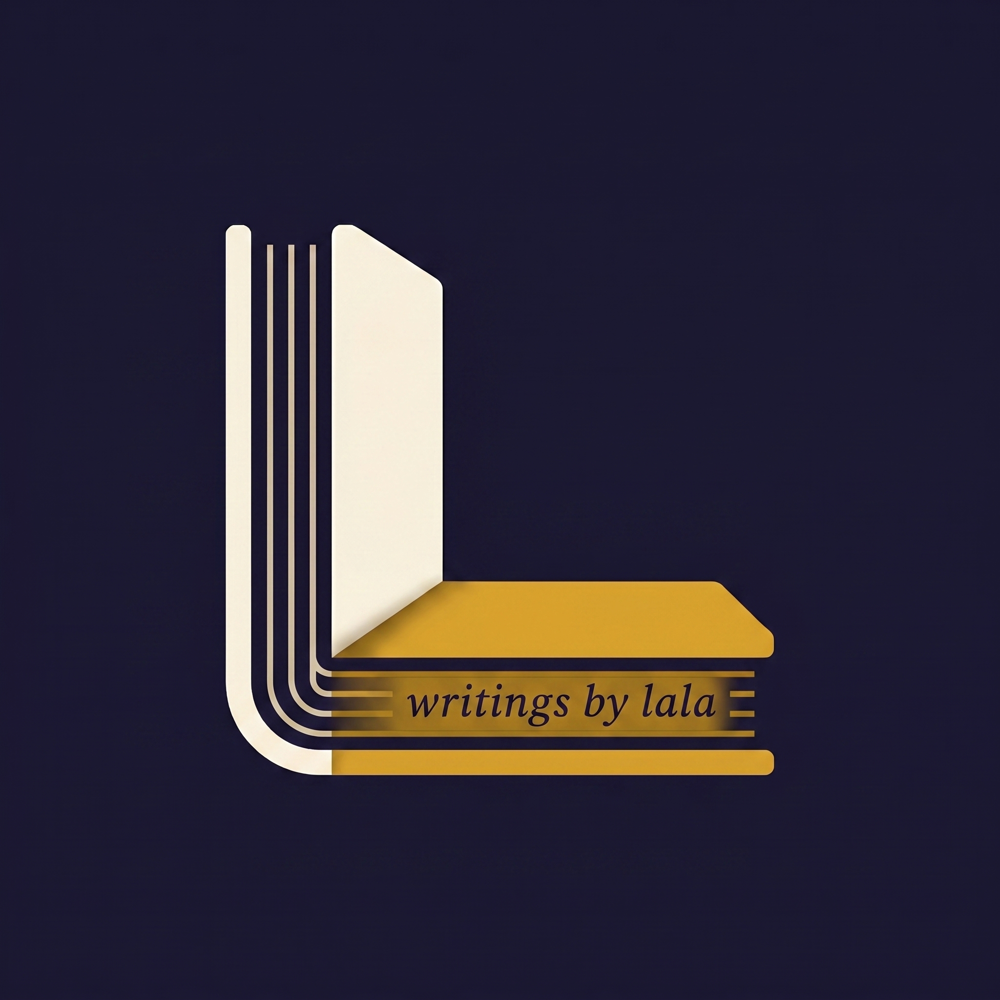
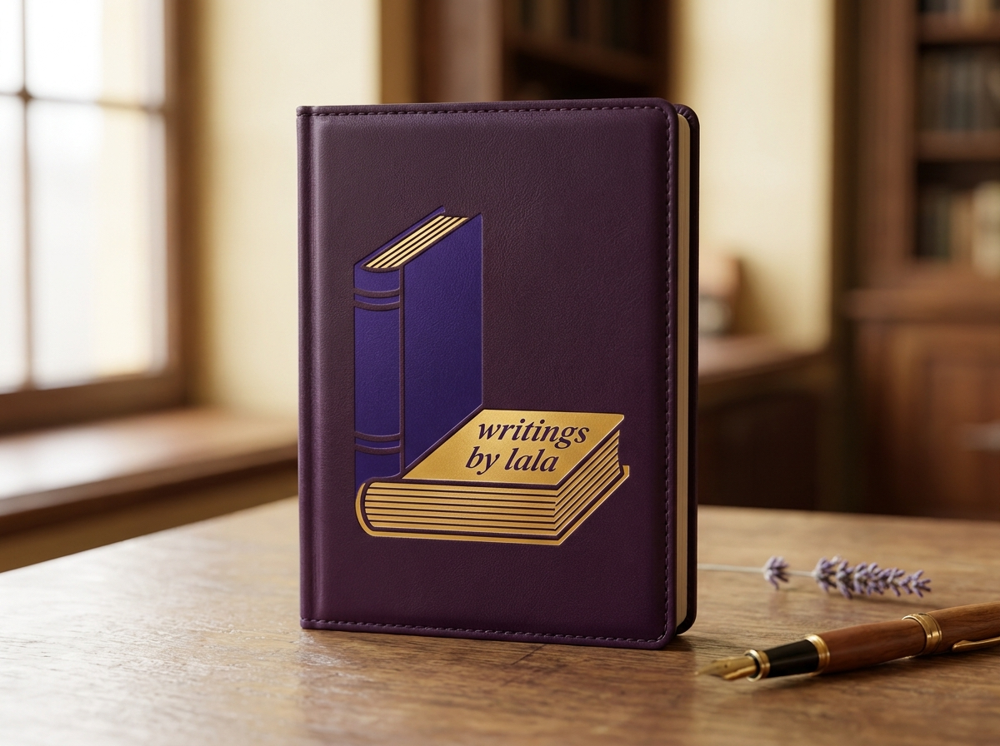
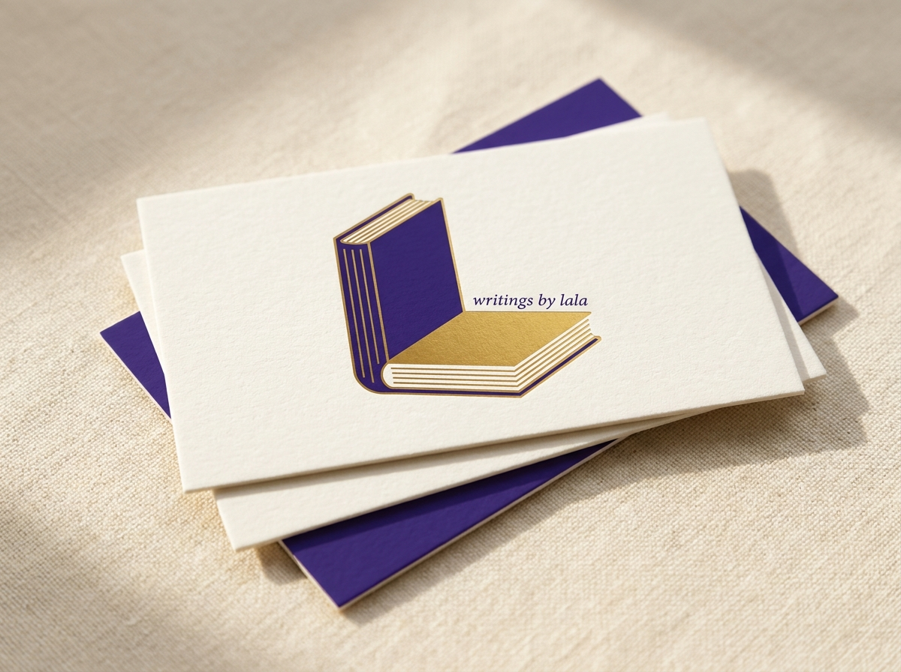
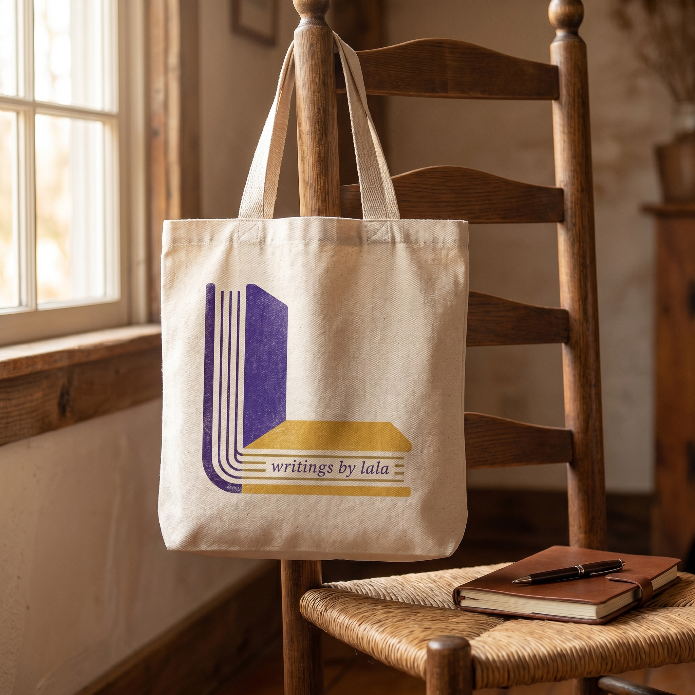
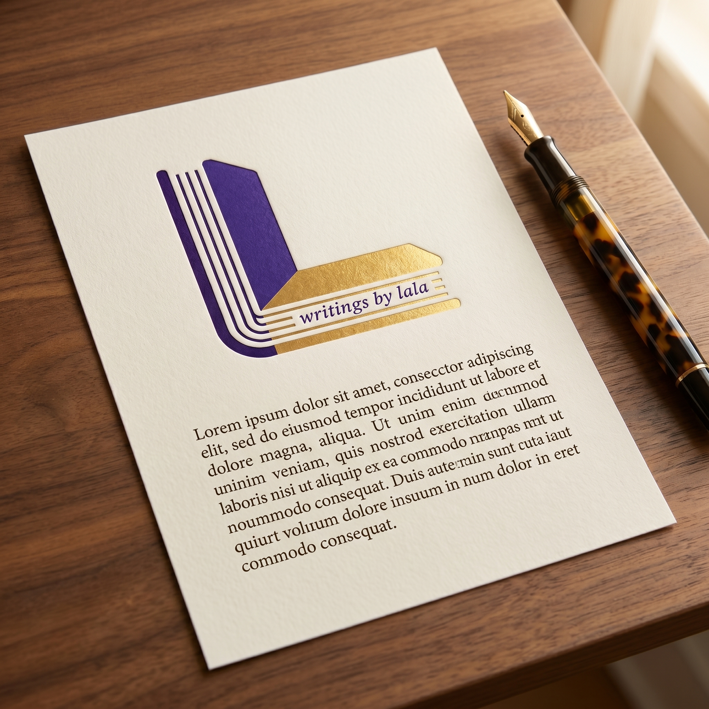

Royal Purple
Logo cover · Primary
- HEX
- #4a2f8a
- RGB
- 74, 47, 138
- CMYK
- 46 66 0 46

The mark is a single book seen from two angles. The standing cover and the lying pages share a corner — a purple cover wrapping into gold pages — with the wordmark integrated on the page face. The page-stack lines that wrap the corner read as one continuous binding: two stories, one spine.

Cover (vertical). The purple book cover stands up — height-dominant — establishing the vertical of the L.
Pages (horizontal). The gold pages lie flat — width-dominant — forming the foot of the L.
Wrapping pages. Three page-stack lines arc from the left edge of the cover, around the bottom-left corner, and along the bottom of the pages — proving they are one book, not two.
Wordmark. writings by lala sits centered on the gold page surface in italic Cormorant Garamond — a quiet voice on the page face rather than a loud line below the mark.
Clearspace is measured by x — the height of the gold page band. Maintain at least 1x of breathing room on every side. Below the minimum size, switch to the favicon.
The brand runs on two palettes. The logo palette is saturated and ceremonial — used for the mark itself and high-impact print moments. The UI palette is calmer, warmer, and built for long-form reading on screen.
Print note. CMYK values above are software approximations. For premium print runs (letterpress invitations, foil-stamped covers, branded packaging), request a Pantone match from your print vendor using the HEX reference. Royal Purple is closest to PMS 2685 C; Page Gold is closest to PMS 7563 C.
Four typefaces, each with a job. The handwritten wordmark says this is personal. The serif italics say this is literary. The body serif carries long-form reading. The sans handles UI and metadata.
Writings by Lala is a personal-brand publication. Every post follows a 7-beat structure: vulnerability → scene → inner critic → empathy pivot → lesson via story → faith anchor → warm invitation. The voice is the woman who has been there — not the expert who has read about it.
Open with a raw sentence — a body, a time, a place. Never a thesis or a question to the reader.
When the inner critic speaks, quote her sentences. Don’t describe what she said — let her say it.
End with a today-sized action the reader can take. Never “subscribe now,” never “join my community.” A warm invitation, quietly placed.
Scripture and signature phrases are applied to the lesson, not cited as decoration. Three anchors: identity as royalty, embracing hardship, work as worship.
Full voice doctrine: writings-by-lala-critic.md
Six application studies showing the mark in its natural habitats — paper, leather, ceramic, fabric, screen. The mark adapts to surface, the surface does not adapt to the mark.




All approved assets live in this folder. Right-click any tile to save the file.
{kind=link}
{kind=link}
{kind=link}
{kind=link}
{kind=link}
{kind=link}
{kind=link}
{kind=link}
{kind=link}
{kind=link}